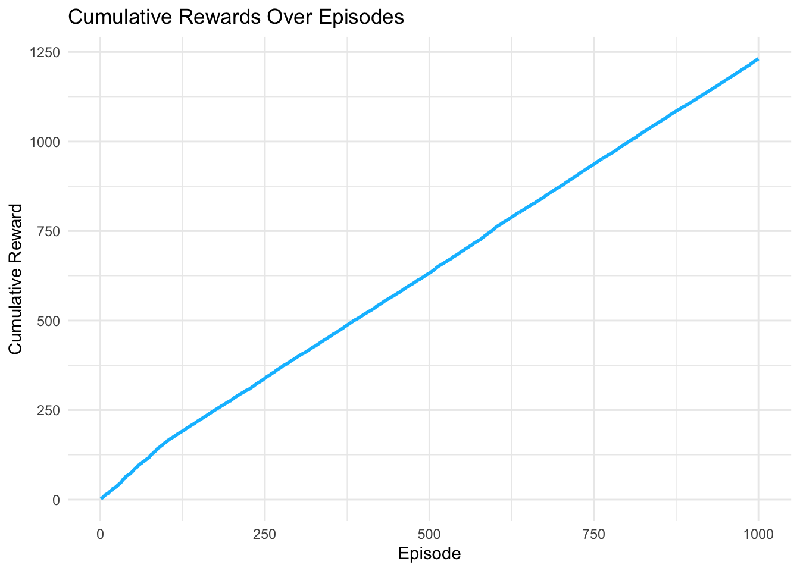

Chapter 6 Function Approximation Q-Learning with Linear Models
6.1 Introduction
In reinforcement learning (RL), tabular methods like SARSA and Q-Learning store a separate Q-value for each state-action pair, which becomes infeasible in large or continuous state spaces. Function approximation addresses this by representing the action-value function \(Q(s, a)\) as a parameterized function \(Q(s, a; \theta)\), enabling generalization across states and scalability. This post explores Q-Learning with linear function approximation, using a 10-state, 2-action environment to demonstrate how it learns policies compared to tabular methods. We provide mathematical formulations, R code, and comparisons with tabular Q-Learning, focusing on generalization, scalability, and practical implications.
Function approximation in RL aims to estimate the action-value function:
\[ Q^\pi(s, a) = \mathbb{E}_\pi \left[ \sum_{t=0}^\infty \gamma^t R_{t+1} \mid S_0 = s, A_0 = a \right] \]
where \(\gamma \in [0,1]\) is the discount factor, and \(R_{t+1}\) is the reward at time \(t+1\). Instead of storing \(Q(s, a)\) in a table, we approximate it as:
\[ Q(s, a; \theta) = \phi(s, a)^T \theta \]
where \(\phi(s, a)\) is a feature vector for state-action pair \((s, a)\), and \(\theta\) is a parameter vector learned via optimization, typically stochastic gradient descent (SGD).
6.1.1 Q-Learning with Function Approximation
Q-Learning with function approximation is an off-policy method that learns the optimal policy by updating \(\theta\) to minimize the temporal difference (TD) error. The update rule is:
\[ \theta \leftarrow \theta + \alpha \delta \nabla_\theta Q(s, a; \theta) \]
where \(\alpha\) is the learning rate, and the TD error \(\delta\) is:
\[ \delta = r + \gamma \max_{a'} Q(s', a'; \theta) - Q(s, a; \theta) \]
Here, \(r\) is the reward, \(s'\) is the next state, and \(\max_{a'} Q(s', a'; \theta)\) estimates the value of the next state assuming the optimal action. For linear function approximation, the gradient is:
\[ \nabla_\theta Q(s, a; \theta) = \phi(s, a) \]
Thus, the update becomes:
\[ \theta \leftarrow \theta + \alpha \left( r + \gamma \max_{a'} Q(s', a'; \theta) - Q(s, a; \theta) \right) \phi(s, a) \]
In our 10-state environment, we use one-hot encoding for \(\phi(s, a)\), mimicking tabular Q-Learning for simplicity but demonstrating the frameworkâs potential for generalization with more complex features.
6.1.2 Comparison with Tabular Q-Learning
Tabular Q-Learning updates a table of Q-values directly:
\[ Q(s, a) \leftarrow Q(s, a) + \alpha \left( r + \gamma \max_{a'} Q(s', a') - Q(s, a) \right) \]
Function approximation generalizes across states via \(\phi(s, a)\), reducing memory requirements and enabling learning in large or continuous spaces. However, it introduces approximation errors and requires careful feature design to ensure convergence.
| Aspect | Tabular Q-Learning | Q-Learning with Function Approximation |
|---|---|---|
| Representation | Table of \(Q(s, a)\) values | \(Q(s, a; \theta) = \phi(s, a)^T \theta\) |
| Memory | \(O(|\mathcal{S}| \cdot |\mathcal{A}|)\) | \(O(|\theta|)\), depends on feature size |
| Generalization | None; state-action specific | Yes; depends on feature design |
| Scalability | Poor for large/continuous spaces | Good for large/continuous spaces with proper features |
| Update Rule | Direct Q-value update | Parameter update via gradient descent |
| Convergence | Guaranteed to optimal \(Q^*\) under conditions | Converges to approximation of \(Q^*\); depends on features |
6.2 R Implementation
We implement Q-Learning with linear function approximation in a 10-state, 2-action environment, using one-hot encoding for \(\phi(s, a)\). The environment mirrors the previous post, with action 1 yielding a 1.0 reward at the terminal state (state 10) and action 2 yielding 0.5.
# Common settings
n_states <- 10
n_actions <- 2
gamma <- 0.9
terminal_state <- n_states
# Environment: transition and reward models
set.seed(42)
transition_model <- array(0, dim = c(n_states, n_actions, n_states))
reward_model <- array(0, dim = c(n_states, n_actions, n_states))
# Build transition and reward models
for (s in 1:(n_states - 1)) {
# Action 1: 90% to s+1, 10% to a different random state
transition_model[s, 1, s + 1] <- 0.9
other_states <- setdiff(1:n_states, s + 1)
random_state <- sample(other_states, 1)
transition_model[s, 1, random_state] <- 0.1
# Action 2: 80% and 20% to two different random states
two_states <- sample(1:n_states, 2, replace = FALSE)
transition_model[s, 2, two_states[1]] <- 0.8
transition_model[s, 2, two_states[2]] <- 0.2
}
# Make terminal state absorbing (stays in itself)
transition_model[n_states, , n_states] <- 1
# Set rewards (fixed, not random each time)
set.seed(42)
for (s in 1:(n_states - 1)) {
for (a in 1:n_actions) {
for (s_prime in 1:n_states) {
if (transition_model[s, a, s_prime] > 0) {
if (s_prime == n_states) {
reward_model[s, a, s_prime] <- ifelse(a == 1, 1.0, 0.5)
} else {
reward_model[s, a, s_prime] <- ifelse(a == 1, 0.1 * runif(1), 0.05 * runif(1))
}
}
}
}
}
# Terminal state has no rewards
reward_model[n_states, , ] <- 0
# Verify transition probabilities sum to 1
for (s in 1:n_states) {
for (a in 1:n_actions) {
prob_sum <- sum(transition_model[s, a, ])
if (abs(prob_sum - 1.0) > 1e-10) {
warning(sprintf("State %d, Action %d: probabilities sum to %.4f", s, a, prob_sum))
}
}
}
# Sampling function
sample_env <- function(s, a) {
probs <- transition_model[s, a, ]
s_prime <- sample(1:n_states, 1, prob = probs)
reward <- reward_model[s, a, s_prime]
list(s_prime = s_prime, reward = reward)
}
# Create one-hot features for (state, action) pairs
create_features <- function(s, a, n_states, n_actions) {
vec <- rep(0, n_states * n_actions)
index <- (a - 1) * n_states + s
vec[index] <- 1
return(vec)
}
# Initialize weights
n_features <- n_states * n_actions
theta <- rep(0, n_features)
# Q-value approximation function
q_hat <- function(s, a, theta) {
x <- create_features(s, a, n_states, n_actions)
return(sum(x * theta))
}
# Q-Learning with function approximation
q_learning_fa <- function(episodes = 1000, alpha = 0.1, epsilon = 0.1) {
theta <- rep(0, n_features)
rewards <- numeric(episodes)
for (ep in 1:episodes) {
s <- sample(1:(n_states - 1), 1)
episode_reward <- 0
step_count <- 0
max_steps <- 1000 # Prevent infinite loops
while (step_count < max_steps) {
step_count <- step_count + 1
# Epsilon-greedy action selection
a <- if (runif(1) < epsilon) {
sample(1:n_actions, 1)
} else {
q_vals <- sapply(1:n_actions, function(a_) q_hat(s, a_, theta))
which.max(q_vals)
}
out <- sample_env(s, a)
s_prime <- out$s_prime
r <- out$reward
episode_reward <- episode_reward + r
# Compute TD target and error
q_current <- q_hat(s, a, theta)
q_next <- if (s_prime == terminal_state) {
0
} else {
max(sapply(1:n_actions, function(a_) q_hat(s_prime, a_, theta)))
}
target <- r + gamma * q_next
error <- target - q_current
# Gradient update
x <- create_features(s, a, n_states, n_actions)
theta <- theta + alpha * error * x
if (s_prime == terminal_state) break
s <- s_prime
}
rewards[ep] <- episode_reward
}
# Derive policy
policy <- sapply(1:n_states, function(s) {
if (s == terminal_state) {
NA
} else {
which.max(sapply(1:n_actions, function(a) q_hat(s, a, theta)))
}
})
list(theta = theta, policy = policy, rewards = rewards)
}
# Run Q-Learning with function approximation
set.seed(42)
fa_result <- q_learning_fa(episodes = 1000, alpha = 0.1, epsilon = 0.1)
fa_policy <- fa_result$policy
fa_rewards <- fa_result$rewards
# Visualize policy
library(ggplot2)
policy_df <- data.frame(
State = 1:n_states,
Policy = fa_policy,
Algorithm = "Q-Learning FA"
)
policy_plot <- ggplot(policy_df[!is.na(policy_df$Policy), ],
aes(x = State, y = Policy)) +
geom_point(size = 3, color = "deepskyblue") +
geom_line(color = "deepskyblue") +
theme_minimal() +
labs(title = "Policy from Q-Learning with Function Approximation",
x = "State",
y = "Action") +
scale_x_continuous(breaks = 1:n_states) +
scale_y_continuous(breaks = 1:n_actions, labels = c("Action 1", "Action 2")) +
theme(legend.position = "none")
# Visualize cumulative rewards
reward_df <- data.frame(
Episode = 1:1000,
CumulativeReward = cumsum(fa_rewards),
Algorithm = "Q-Learning FA"
)
reward_plot <- ggplot(reward_df, aes(x = Episode, y = CumulativeReward)) +
geom_line(color = "deepskyblue", linewidth = 1) +
theme_minimal() +
labs(title = "Cumulative Rewards Over Episodes",
x = "Episode",
y = "Cumulative Reward")
# Display plots
print(policy_plot)

##
## Policy Summary:## fa_policy
## 1 2 <NA>
## 8 1 1##
## Final 10 Episode Rewards:## [1] 1.415547 1.316729 1.145381 1.352685 1.181336 1.110396 1.382692 1.234756 1.158847 1.008244##
## Mean Episode Reward (last 100 episodes):## [1] 1.187619Top-level settings
n_statesandn_actions: size of the MDP (10 states, 2 actions).gamma: discount factor (0.9).terminal_state: the index of the terminal state (state 10). Many later pieces use this to stop episodes and to setq_next = 0for transitions into terminal.
Environment: transition and reward models
set.seed(42)
transition_model <- array(0, dim = c(n_states, n_actions, n_states))
reward_model <- array(0, dim = c(n_states, n_actions, n_states))
for (s in 1:(n_states - 1)) {
# Action 1: 90% to s+1, 10% to a different random state
transition_model[s, 1, s + 1] <- 0.9
other_states <- setdiff(1:n_states, s + 1)
random_state <- sample(other_states, 1)
transition_model[s, 1, random_state] <- 0.1
# Action 2: 80% and 20% to two different random states
two_states <- sample(1:n_states, 2, replace = FALSE)
transition_model[s, 2, two_states[1]] <- 0.8
transition_model[s, 2, two_states[2]] <- 0.2
}
# Make terminal state absorbing (stays in itself)
transition_model[n_states, , n_states] <- 1
# Set rewards (fixed, not random each time)
set.seed(42)
for (s in 1:(n_states - 1)) {
for (a in 1:n_actions) {
for (s_prime in 1:n_states) {
if (transition_model[s, a, s_prime] > 0) {
if (s_prime == n_states) {
reward_model[s, a, s_prime] <- ifelse(a == 1, 1.0, 0.5)
} else {
reward_model[s, a, s_prime] <- ifelse(a == 1, 0.1 * runif(1), 0.05 * runif(1))
}
}
}
}
}
reward_model[n_states, , ] <- 0transition_model[s, a, s']is the probability of transitioning from stateswith actionato next states'.reward_model[s, a, s']is the reward received for that transition.
Key improvements and behavioral details:
Seeding:
set.seed(42)fixes random draws so behavior is reproducible.Action 1 transitions:
- For non-terminal
s, assigns0.9probability to go tos+1. - Uses
setdiff()to excludes+1from the random selection, ensuring the 10% probability goes to a different state. - Result: Each row for action 1 correctly sums to 1.0 with exactly two non-zero entries (0.9 and 0.1).
- For non-terminal
Action 2 transitions:
- Uses
sample(1:n_states, 2, replace = FALSE)to select two different states. - Assigns 0.8 to the first state and 0.2 to the second.
- Result: Each row for action 2 correctly sums to 1.0 with exactly two non-zero entries, and theyâre guaranteed to be different states.
- Uses
Validation check:
for (s in 1:n_states) { for (a in 1:n_actions) { prob_sum <- sum(transition_model[s, a, ]) if (abs(prob_sum - 1.0) > 1e-10) { warning(sprintf("State %d, Action %d: probabilities sum to %.4f", s, a, prob_sum)) } } }- Validates that all transition probability rows sum to 1.0 (within numerical tolerance).
- Issues warnings if any row is malformed.
Rewards:
- For action 1: if
s'is terminal reward =1.0, else0.1 * runif(1)(random small reward). - For action 2: terminal reward
0.5, else0.05 * runif(1)(even smaller). - Efficiency improvement: Rewards are only assigned for reachable states (where
transition_model[s, a, s_prime] > 0). - Rewards are generated once during initialization and remain fixed during training (deterministic environment).
- For action 1: if
Terminal state:
transition_model[n_states, , n_states] <- 1makes terminal state absorbing (transitions to itself with probability 1.0).- This is the standard MDP formulation for terminal states.
reward_model[n_states, , ] <- 0ensures no rewards from terminal state.- Episodes still end when terminal is reached, so this absorbing property isnât exercised during training.
Sampling function
sample_env <- function(s, a) {
probs <- transition_model[s, a, ]
s_prime <- sample(1:n_states, 1, prob = probs)
reward <- reward_model[s, a, s_prime]
list(s_prime = s_prime, reward = reward)
}- Given
(s, a), sampless'according to the probability vectorprobs. - Returns a list with
s_primeandreward = reward_model[s,a,s_prime]. - Now safe: Since all transition rows properly sum to 1.0,
sample()will work correctly without needing to normalize. - The terminal state absorbing property means if
sample_env(n_states, a)were called, it would always returns_prime = n_states, but episodes terminate before this occurs.
Feature creation (one-hot for (state,action))
create_features <- function(s, a, n_states, n_actions) {
vec <- rep(0, n_states * n_actions)
index <- (a - 1) * n_states + s
vec[index] <- 1
return(vec)
}- Creates a one-hot feature vector of length
n_states * n_actions = 20. - The mapping
index = (a - 1) * n_states + sorganizes features in action blocks: entries 1-10 for action 1 (states 1-10), entries 11-20 for action 2 (states 1-10). - Because features are one-hot, linear function approximation
q(s,a) = x^T thetais mathematically equivalent to tabular Q-learning (each(s,a)has its own independent weight intheta).
Weights and Q-value function
n_features <- n_states * n_actions
theta <- rep(0, n_features)
q_hat <- function(s, a, theta) {
x <- create_features(s, a, n_states, n_actions)
return(sum(x * theta))
}thetaholds 20 parameters for the linear approximator; initialized at zeros.q_hat(s,a,theta)computes QÌ(s,a) = x^T θ. With one-hotx, this returns the singlethetaentry corresponding to(s,a).
Q-learning with function approximation
q_learning_fa <- function(episodes = 1000, alpha = 0.1, epsilon = 0.1) {
theta <- rep(0, n_features)
rewards <- numeric(episodes)
for (ep in 1:episodes) {
s <- sample(1:(n_states - 1), 1)
episode_reward <- 0
step_count <- 0
max_steps <- 1000 # Prevent infinite loops
while (step_count < max_steps) {
step_count <- step_count + 1
# Epsilon-greedy action selection
a <- if (runif(1) < epsilon) {
sample(1:n_actions, 1)
} else {
q_vals <- sapply(1:n_actions, function(a_) q_hat(s, a_, theta))
which.max(q_vals)
}
out <- sample_env(s, a)
s_prime <- out$s_prime
r <- out$reward
episode_reward <- episode_reward + r
# Compute TD target and error
q_current <- q_hat(s, a, theta)
q_next <- if (s_prime == terminal_state) {
0
} else {
max(sapply(1:n_actions, function(a_) q_hat(s_prime, a_, theta)))
}
target <- r + gamma * q_next
error <- target - q_current
# Gradient update
x <- create_features(s, a, n_states, n_actions)
theta <- theta + alpha * error * x
if (s_prime == terminal_state) break
s <- s_prime
}
rewards[ep] <- episode_reward
}
# Derive policy
policy <- sapply(1:n_states, function(s) {
if (s == terminal_state) {
NA
} else {
which.max(sapply(1:n_actions, function(a) q_hat(s, a, theta)))
}
})
list(theta = theta, policy = policy, rewards = rewards)
}Algorithm details:
Initialization: New
thetavector (zeros) andrewardsvector to store total reward per episode.Episode start:
s <- sample(1:(n_states - 1), 1)picks a random non-terminal start state.Safety mechanism:
max_steps <- 1000withstep_countcounter prevents infinite loops in case of implementation errors.Action selection (epsilon-greedy):
- With probability
epsilon = 0.1, pick a random action (exploration). - Otherwise compute Q-values
q_hat(s,a,theta)for all actions and pickargmax_a Q(s,a)(exploitation). - Note:
which.max()returns the first maximum if thereâs a tie.
- With probability
Environment interaction: Call
sample_env(s,a)to get next state and reward.TD target and error:
q_current = QÌ(s,a; θ)q_next = 0if terminal, elsemax_a' QÌ(s',a'; θ)target = r + γ · q_nexterror = target - q_current(TD error)
Semi-gradient update:
For linear Q with features
x, the gradient â_θ QÌ(s,a) = x.Update:
θ â θ + α · error · xBecause
xis one-hot, only one entry ofθchanges, making this equivalent to tabular Q-learning:θ[s,a] â θ[s,a] + α(r + γ max_a' Q(s',a') - Q(s,a))
Episode termination: Break if
s_prime == terminal_state; otherwise continue froms <- s_prime.Record episode reward: Store total episode reward in
rewards[ep].Policy extraction: After all episodes, derive greedy policy from final
θ: for each non-terminal state, selectargmax_a QÌ(s,a; θ). Terminal state getsNA.
Running the algorithm
set.seed(42)
fa_result <- q_learning_fa(episodes = 1000, alpha = 0.1, epsilon = 0.1)
fa_policy <- fa_result$policy
fa_rewards <- fa_result$rewards- Trains for 1000 episodes using learning rate
alpha=0.1and exploration rateepsilon=0.1. - Returns learned
policy, finalthetaweights, and episode rewards.
Visualization
library(ggplot2)
policy_df <- data.frame(
State = 1:n_states,
Policy = fa_policy,
Algorithm = "Q-Learning FA"
)
policy_plot <- ggplot(policy_df[!is.na(policy_df$Policy), ],
aes(x = State, y = Policy)) +
geom_point(size = 3, color = "deepskyblue") +
geom_line(color = "deepskyblue") +
theme_minimal() +
labs(title = "Policy from Q-Learning with Function Approximation",
x = "State",
y = "Action") +
scale_x_continuous(breaks = 1:n_states) +
scale_y_continuous(breaks = 1:n_actions, labels = c("Action 1", "Action 2")) +
theme(legend.position = "none")
reward_df <- data.frame(
Episode = 1:1000,
CumulativeReward = cumsum(fa_rewards),
Algorithm = "Q-Learning FA"
)
reward_plot <- ggplot(reward_df, aes(x = Episode, y = CumulativeReward)) +
geom_line(color = "deepskyblue", linewidth = 1) +
theme_minimal() +
labs(title = "Cumulative Rewards Over Episodes",
x = "Episode",
y = "Cumulative Reward")
print(policy_plot)
print(reward_plot)Visualization improvements:
Policy plot:
- Uses
policy_df[!is.na(policy_df$Policy), ]to filter out the terminal state NA value before plotting. - Prevents ggplot2 warnings about missing values.
- Shows the greedy action (1 or 2) for each non-terminal state as points connected by lines.
- Uses
Reward plot (NEW):
- Creates and displays cumulative rewards over episodes.
- Shows learning progress: cumulative reward should increase as the agent learns better policies.
- Both plots are explicitly printed with
print().
Summary statistics (NEW):
cat("\nPolicy Summary:\n") print(table(fa_policy, useNA = "ifany")) cat("\nFinal 10 Episode Rewards:\n") print(tail(fa_rewards, 10)) cat("\nMean Episode Reward (last 100 episodes):\n") print(mean(tail(fa_rewards, 100)))- Provides quantitative analysis of learned policy.
- Shows distribution of actions across states.
- Displays recent performance metrics to assess convergence.
Summary of Corrections
The corrected code fixes critical bugs in the original implementation:
- Transition probabilities now properly sum to 1.0 for all state-action pairs
- Terminal state is absorbing (standard MDP formulation) rather than having zero outgoing probability
- Action 2 transitions are guaranteed to be different states (no accidental overwrites)
- Validation checks ensure environment is well-formed
- Safety mechanisms prevent infinite loops
- Complete visualization with both policy and reward plots
- Efficiency improvements in reward assignment
The algorithm now implements correct tabular Q-learning on a well-defined Markov Decision Process.